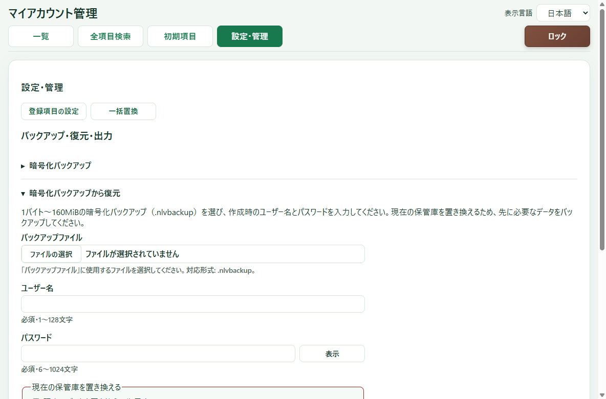
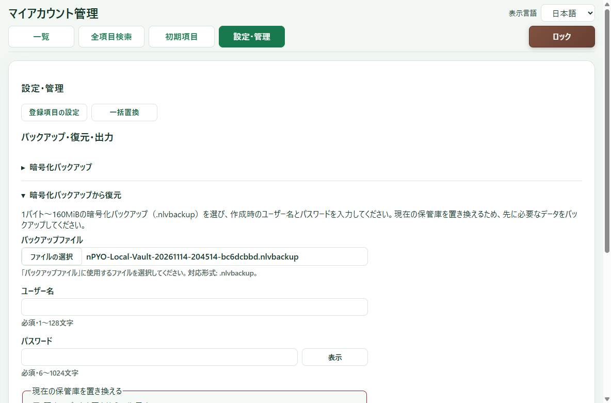
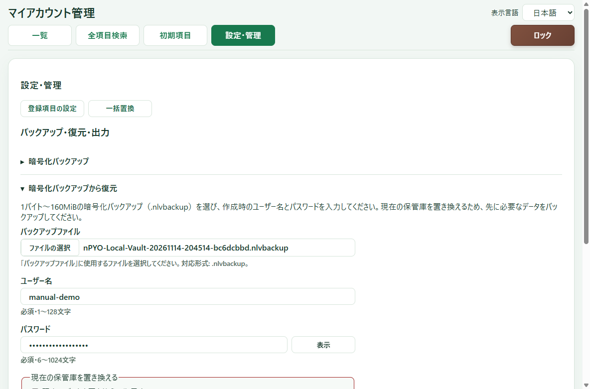
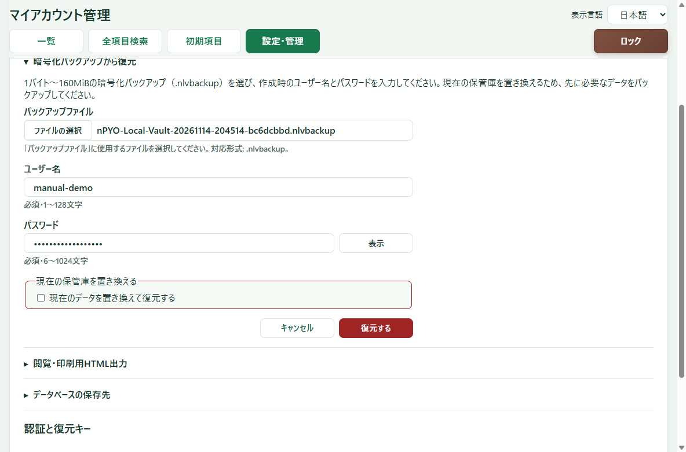
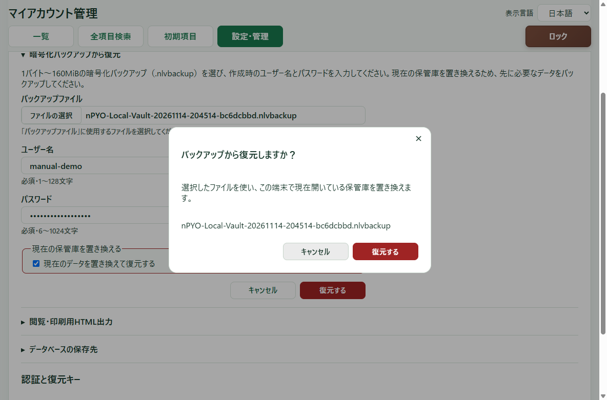
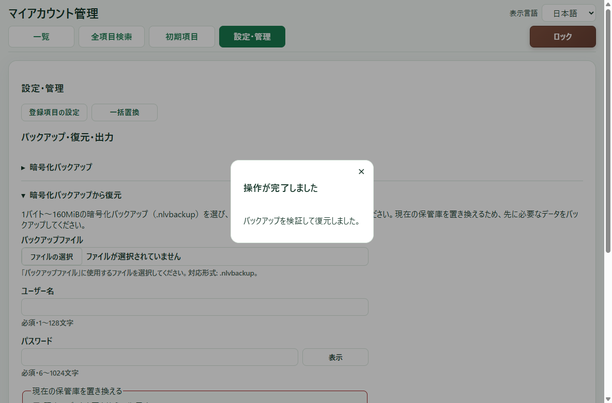

36バックアップから復元
バックアップ作成時の認証情報で、現在の保管庫を置き換えます。
1復元欄を開く
必要な現在のデータを先にバックアップし、［暗号化バックアップから復元］を開きます。

2バックアップを選ぶ
［ファイルの選択］から .nlvbackup ファイルを選びます。

3作成時の認証情報を入力
このバックアップを作成したときのユーザー名とパスワードを入力します。

4置き換えの確認欄へ進む
下へスクロールします。現在の保管庫が置き換わることを確認してください。

5確認欄をオンにする
［現在のデータを置き換えて復元する］をオンにし、［復元する］を押します。
6対象をもう一度確認する
確認画面のファイル名を確認します。進める場合は［復元する］、やめる場合は［キャンセル］を押します。

7完了表示を確認する
「バックアップを検証して復元しました。」を確認します。

8一覧の内容を確認
完了表示を閉じ、［一覧］で登録件数とアカウント名を確認します。

9詳細も確認
［詳細を表示］を押し、復元した登録内容を確認します。